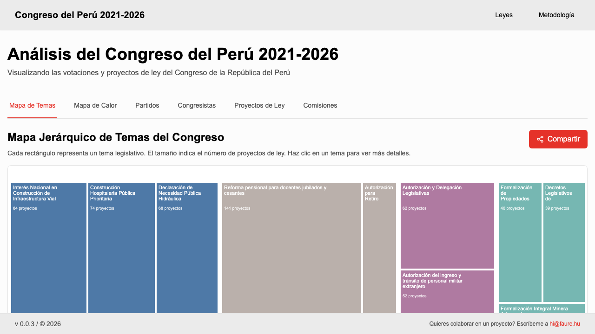
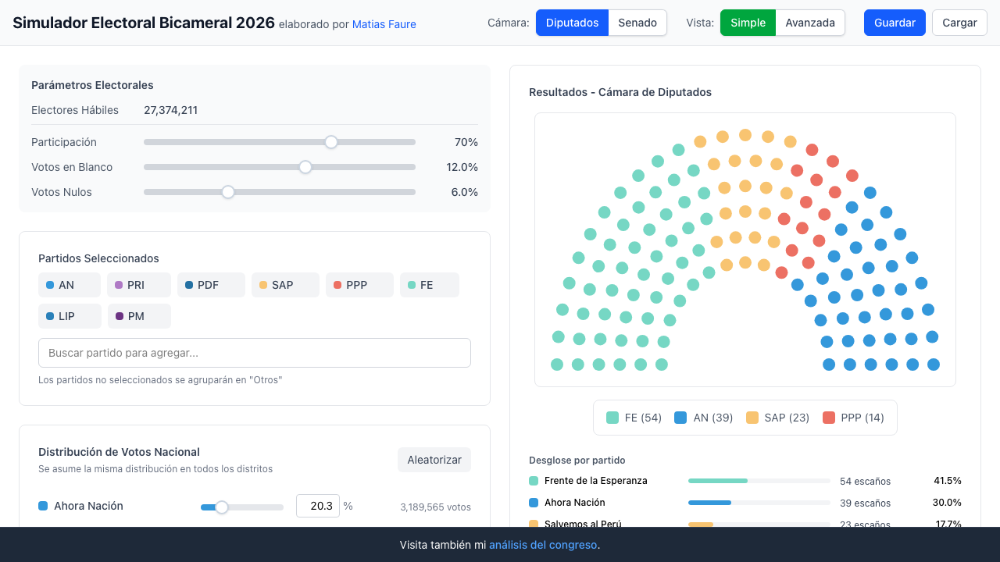
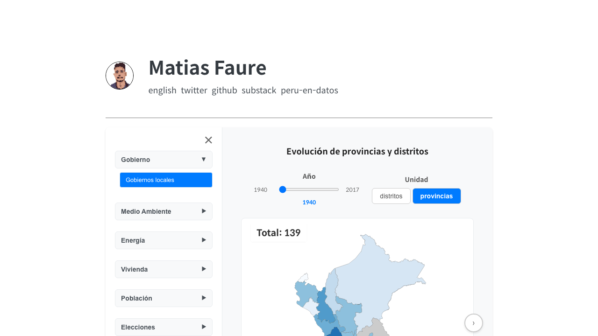

Quién dicta
MF
Matias Faure
Analista político · Consultor de Tecnología
Doctorado en Economía Política en NYU. Consultor para empresas en procesos de automatización y manejo de información. Con experiencia dictando cursos de computación y teoría de juegos.
Proyectos recientes

Análisis del Congreso 2021-2026
Mapa interactivo de votaciones y proyectos de ley del Congreso peruano.
congreso.matiasfaure.com

Simulador Electoral 2026
Modela los resultados de las elecciones bicamerales ajustando participación y votos.
simulador.matiasfaure.com

Perú en Datos
Colección de visualizaciones sobre estadísticas y territorio peruano.
matiasfaure.com/peru-data
Hilos recientes


1 / 6